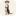
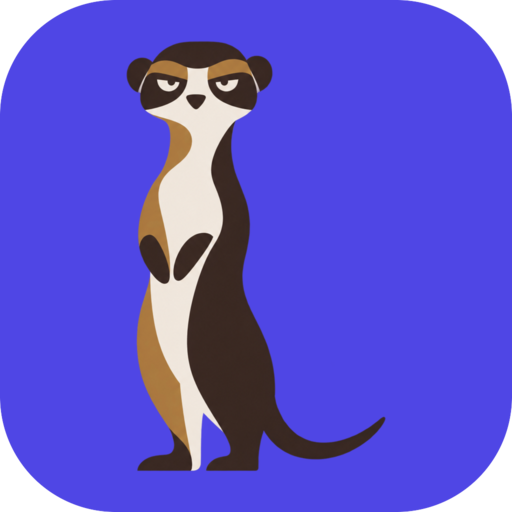
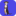

Meerkat 标志：四种切法，同一把尺子
512 / 64 / 32 / 16px 全部按真实像素渲染 · 2026-11-01
托盘 16–22px 侧栏 32px 应用图标 256–512px
左三是缩小，最右是 16px 放大 8 倍的真值
现状：插画全身 · 纸白底
暖棕三色、内部有大量结构。品牌文档已注明 32px 要换头肩版。
32px 以下失效

只换容器：插画 + 靛蓝底
不动画风，只把纸白换成 Lumen 的靛蓝。对比够了，但小尺寸仍是糊的。
512 成立 / 32 不行


双色几何头 · 冷（建议）
把插画压成「奶油头 + 墨色眼罩」两色，轮廓从原图矢量描出，不是重画。
512–32 成立
双色几何头 · 暖（备选）
同一张图，毛色换回品牌暖奶油。保住插画的温度，眼罩与底色的分离弱一档。
512–64 成立
结论：
16px 不能靠缩同一张图，必须单独画一版（两条眼缝 + 两个耳朵，三个形状封顶）。
托盘：
另需单色版，与彩色版分开维护。